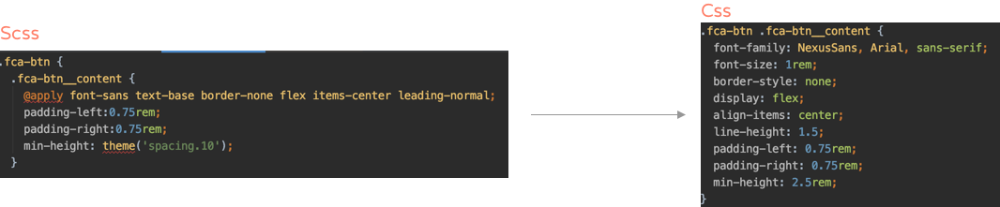

Mastering the art of
KUNG-FUI
React UI Components Workshop
AGENDA:
Introduction (45min)
- Brand guidelines overview
- Why a shared component library
- Storybook
How can I add my own component into the library? (45min)
- How to create a ui component
- Tailwind
- Npm and Artifactory
- Deploy a new version
- Local testing
Let's code (1.5hrs)
- Create react app
- Setup Kung-Fui locally
- Build a React App with existing components
Ready to start?
Chapter 1
Brand guidelines
“The Elsevier brand guidelines will help you understand the systems and strategic rationale that underpins our brand. It will help you manage your assets, products and communications in a consistent, coherent and expressive way – to support our globally-recognizable brand.”Brand guidelines website
How can we ensure our products are aligned with brand guidelines?
Case study: The FCA context
- Multiple products maintained by different teams
- No comunication between teams
- Duplication
- No consistecy
- Slowdowns
- Impossible to share

The solution
A good approach for avoiding such a situation is sharing a common UI-library that can be used as a reference. It will help to reduce duplications and it will speed up the development of new products and features.
The main advantages of sharing a components library are:
- Improve consistency across products
- Having developers able to build and maintain components across different products
- Providing a reference for designers and developers
- Avoiding duplications
- Speed up development
- Reducing complexity
The Storybook
“It is an open source tool for developing UI components in isolation. It makes building stunning UIs organized and efficient.”FCA Storybook
let's start building it!
Chapter 2
How can I add my own component into the library?
The github repoAnatomy of our library

Ingredients for our delicious ui component
What is Tailwindcss?
Most CSS frameworks do too much.
“Tailwind is different.
Instead of opinionated predesigned components, Tailwind provides low-level utility classes that let you build completely custom designs without ever leaving your HTML.”
If you're sick of fighting the framework, overriding unwanted styles, and battling specificity wars, Tailwind was made for you.
What Tailwind is providing
.btn {
@apply font-bold py-2 px-4 rounded;
}
.btn-blue {
@apply bg-blue-500 text-white;
}
.btn-blue:hover {
@apply bg-blue-600;
}
From Tailwind utilities to css
Tailwind utilities with @apply and theme() are converted into pure css
Style tokens
Tailwind is written in PostCSS and configured in JavaScript, which means you have the full power of a real programming language at your fingertips.
// tailwind.config.js
module.exports = {
theme: {
colors: {
primary: {
100: '#ebf8ff', // ==> bg-primary-100, text-primary-100
300: '#90cdf4',
...
},
secondary: {
100: '#fffff0', // ==> bg-secondary-100, text-secondary-100
300: '#faf089',
...
},
spacing: {
...
'10': '2.5rem',
...
},
},
}
}
How to share the library
Share npm module from Artifactory
“Artifactory is where our npm modules lives.
Instead of using the public npm module registry, artifacory is accessible only from Elsevier developers.”
When we are merging a PR to master, the jenkins pipeline will build and publish a new version.
Elsevier artifactoryWhat jenkins does
Here jenkins deploying a new version with the universe

How to import the library locally in your project for test purpose
USE NPM LINK
“The npm documentation defines npm link as a 'means to symlink a package folder'. Put simply, it's a means to connect your parent application to a module you have locally on your machine. When you run the application, any changes you make to the dependency will be reflected in the application.”Npm link documentation
hands on time!
what can ever go wrong?
¯\_(ツ)_/¯